Humanistiska, holistiska principer
Holistiskt och hållbart perspektiv
En av de viktiga principerna inom systemtransformation är helhet. Man kan ha ett holistiskt perspektiv på olika nivåer – från individer och grupper till organisationer och samhällen – genom att betrakta dem utifrån ett helhetsperspektiv. Det handlar om att se hur olika aspekter eller delar påverkar helheten och att sträva efter balans och välbefinnande i hela systemet.
Vi är som individer till exempel alltid en sammanvävning av många olika delar. En komplexitet av tankar, känslor, viljor och roller som aktiveras i olika situationer. Därför hjälper det oss inte att se oss själva genom separation och reduktion, exempelvis genom att skilja mellan vår professionella och privata identitet. Det hjälper oss inte att separera våra tankar från våra känslor och föreställa oss att vi på jobbet enbart kan vara bara rationella.
Att ha ett holistiskt perspektiv innebär att vi förstår att oro över ett sjukt barn kan påverka vår produktivitet på jobbet och att vårt välbefinnande kräver att vi tar hänsyn till alla aspekter av oss själva för att hitta en balans.
På samma sätt ser vi att en organisation fungerar om vi lyfter blicken. Det som sker på mikronivå (individ) påverkar en hel grupp, och detta kan i sin tur påverka hela systemet eller organisationen. När olika delar av systemet påverkar varandra behöver vi zooma ut till systemnivå för att förstå samspelet och ta hand om systemets välbefinnande som en helhet.
Att ha ett holistiskt perspektiv innebär också att vi ser människor som en del av naturen och därför riktar vår uppmärksamhet mot det icke-mänskliga – planeten och dess ekosystem – och att vi strävar efter helhet och balans i ekosystemet. Ur detta perspektiv är det inte bara människor som har rättigheter, utan även floder och andra levande varelser i ekosystemet. De behöver också behöver omsorg och uppmärksamhet för att säkerställa välbefinnandet i hela det ekosystem som vi människor är en del av.
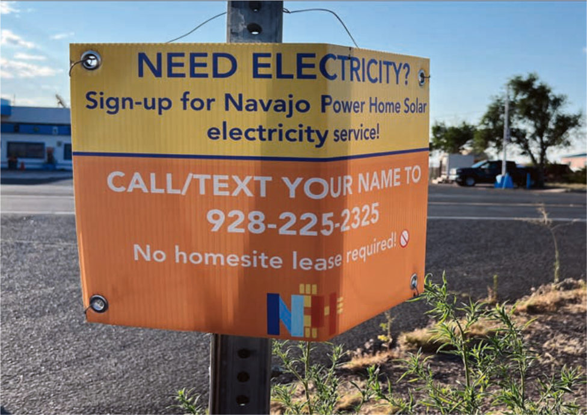
Exempel från praktiken
"En organisation som fastnat i interna silos misslyckades med att möta externa utmaningar. Genom att bryta ner dessa barriärer och arbeta med ett helhetsperspektiv skapades en dynamik som gjorde dem mer anpassningsbara. Att våga se helheten är nyckeln till att övervinna organisatoriska utmaningar."
"I ett projekt [om hälso-sjukvård] definierade vi hälsa som något som går bortom medicinska faktorer – det handlar även om socialt välbefinnande och mental balans. Detta ledde till utvecklingen av en modell som fokuserade på förebyggande insatser och långsiktigt välmående. Genom ett holistiskt synsätt på hälsa kan vi skapa bättre och mer hållbara lösningar."
Rättvist och inkluderande perspektiv
Trasiga system påverkar olika grupper i olika hög grad. Här styr ofta vissa behov över andra, och olika grupper värderas olika. Transformation kostar, i pengar, resurser och kännbara konsekvenser. För att få till varaktig förändring i stor skala (utan socialt uppror), behöver majoriteten aktörer på alla plan känna meningsfullhet och delaktighet, gärna på förhand men åtminstone i efterhand. Detta kräver medvetenhet och tilltro, samt ofta solidaritet och perspektiv som ligger utanför en själv. Det är viktigt att ställa sig frågor kring vem som har att tjäna och förlora på en förändring, vilka röster som hörs och bjuds in. Hur balanserar man perspektiv på ett etiskt godtagbart sätt, och vilka är alternativen?
Ett inkluderande perspektiv stöttas av att tänka och jobba normkritiskt. Idag beskylls inkludering och normkritik ibland för att vara politiskt korrekt (i negativ bemärkelse) och som något man inte borde slösa resurser på. Men det handlar egentligen om en form av perspektivtagande där man försöker förstå systemeffekter och möjligheter utifrån en djupare nivå; normer och tankemodeller. Det gör att vi kan ta oss loss från ifrån blinda fläckar - vilket kan hjälpa till att identifiera hävstångspunkter. Alltså motsatsen till slöseri. Det är även etablerat i forskning att mångfald på olika sätt stärker utveckling och innovation, inte minst för att sammanhang där alla känner sig psykologiskt trygga. Det öppnar upp för välbefinnande, kreativitet och kritiskt ifrågasättande.
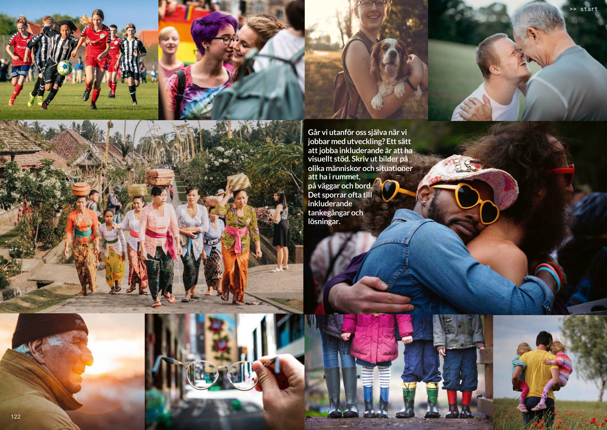
Går vi utanför oss själva när vi jobbar med utveckling? Ett sätt att jobba inkluderande är att ha visuellt stöd. Skriv ut bilder på olika människor och situationer att ha i rummet, på väggar och bord. Det sporrar ofta till inkluderande tankegångar och lösningar.
Exempel från praktiken
”Vuxen-normen” desillusionerar ungdomsrörelsen
Ungdomsrörelsen är en engagemangsplattform som står för en enorm förändringskraft i samhället, när det gäller demokrati, utanförskap, och hållbarhet. Den bidrar till att utveckla ledarskaps- och kommunikationsförmågor och tillvarata engagemang bland unga. En majoritet av våra topp-politiker har också en bakgrund inom ungdomsrörelsen. Trots den här potentialen kämpar unga ledare mot en ”vuxennorm” där insiktsfulla, innovativa och lösningsorienterade unga har svårt att bli tagna på allvar. Det har en demotiverande och destruktiv påverkan som får många att lämna sitt engagemang. Att jobba för och med att förändra den här skadliga normen skulle stärka samhällets transformationsförmåga.
”Raka-vägen-normen” bidrar till utanförskap
I ett projekt kring entreprenörskap bland unga i Värmland, försökte man (RISE) förstå faktorer som gör att unga hamnar i utanförskap. Det blev tydligt att det finns en “raka-vägen-norm” som innebär att vägen till ett lyckligt liv bygger på en lyckad skolgång, följt av jobb eller studier – och allra helst högre studier. Unga som kämpade i skolan möttes av budskapet att betygen de fick, skulle avgöra om de fick ett misslyckat liv där allt var förstört för alltid, och att de hade bara en chans.
I flera fall skapade det en sådan stress att eleverna valde att inte gå till skolan trots att de hade en tydlig yrkesambition. Det kunde också leda till sådan ångest inför sådant som prov, att de inte klarade av att visa allt de kunde i skolan. Samtidigt kunde vi se hur många unga bygger entreprenöriella förmågor på andra sätt – exempelvis genom att tillsammans med vänner bygga om en EPA-traktor och behöva ta till sig stora mängder kunskap om hur en bil fungerar. Eller genom att starta en kaninförening och lära sig om organisering. Att uppvärdera olika sätt att visa kunskap, och olika vägar till kunnande och lärande, skulle medföra att fler kände sig inkluderade och motiverade. Detta skulle både skapa och ge värde, även om det ibland skulle kunna innebära en “omväg”, genom att exempelvis gå om ett år, ta igen på komvux eller göra någon form av praktik.
"Vi lyssnar in medborgarnas perspektiv och försöker skapa en gemensam förståelse. Ett av våra projekt är 'Innanför ringleden’, och handlar om att omvandla tidigare huvudgator och större vägar i Umeå till mer tillgängliga och hållbara stadsrum. För att lyckas måste vi jobba nära medborgarna. Vi har bland annat stadsdelsdialoger där vi möter invånare på deras hemmaplan, istället för att bara bjuda in till möten i kommunhuset." - Mikael Brändström, Umeå kommun
Projektet "Innanför ringleden” i Umeå syftar till att omvandla bilberoende stadsrum till områden som prioriterar gång, cykel och kollektivtrafik. Genom stadsdelsdialoger möter kommunen invånare på deras hemmaplan, exempelvis utanför mataffärer eller bibliotek, för att skapa en öppen och inkluderande dialog. På så sätt säkerställs att invånarnas röster och perspektiv integreras i utvecklingsarbetet, vilket stärker den sociala hållbarheten och skapar en gemensam förståelse för förändringarna.
”Vi ser fantastiska resultat av hela vårt arbete, där deltagare kunnat minska eller helt sluta med medicinering, blivit mer självständiga och fått tillbaka livskvaliteten.” - Linda Löfqvist, Lidingö stad
Lidingö stad har bland annat utvecklat initiativ som klassmor- och farföräldrar, där äldre personer engageras i skolor för att skapa kontakt och gemenskap mellan generationer. De har också skapat annan verksamhet och byggt andra inkluderande initiativ för äldre. Detta bidrar till att stärka känslan av mening och välbefinnande hos både unga och äldre. För de äldre innebär det ett ökat socialt sammanhang och en känsla av att bidra, medan de unga får stöd och förebilder från äldre generationer. Dessa initiativ har visat sig ha positiva effekter på livskvalitet, oberoende och såväl fysisk som mental hälsa för de äldre deltagarna.
Design och att jobba med framväxande processer
En av de grundläggande principerna i komplexa dynamiska system är emergens, vilket innebär en framväxande strategi som är nödvändig vid transformation.
Detta beskrivs på ett insiktsfullt sätt av författaren, facilitatorn och aktivisten Adrienne Maree Brown i boken ”Emergent Strategy”, där hon lyfter fram kärnprinciperna för detta tillvägagångssätt.
Hon menar att när man arbetar med komplexa och transformativa processer, är det bäst att börja experimentera i liten skala. De experiment som lyckas på mikronivå kommer att sprida sig organiskt och så småningom speglas i hela systemet.
Eftersom förändring är ett konstant tillstånd i komplexa system, menar hon att vi behöver röra oss som vatten – i ständig rörelse och med anpassning. Hon betonar också vikten av ett långsiktigt perspektiv eftersom systemtransformation tar tid och kräver tålamod.
Förändring sker i den takt som tilliten byggs upp, vilket innebär att relationer och meningsfulla kopplingar är kärnan i transformativa processer. Därför är det viktigare att bygga resiliens genom starka relationer än att försöka nå så många som möjligt. Misslyckanden är en nödvändig del av lärandet i transformationsprocesser, och vi bör se dem som lärdomar snarare än nederlag.
Vi kan aldrig vara helt förberedda, eftersom vi aldrig fullt ut kan förutse vad som kommer att hända. Men genom att vara närvarande i varje situation kan vi bäst svara på de behov som uppstår för en specifik grupp, vid en specifik tidpunkt och plats.
Emergent (framväxande) transformation kräver tillit och relationer
Slutligen påminner Adrienne Maree Brown oss om att det vi väljer att rikta vår uppmärksamhet mot, kommer att växa och ta större plats. Om vi enbart fokuserar på det negativa riskerar vi att fastna i uppgivenhet. Därför behöver vi medvetet välja vad vi fokuserar på, hur vi spenderar vår tid och vad vi ger vår uppmärksamhet.
Emergent strategy core principles. Small is good, small is all. (The large is the reflection of the small) Change is constant. (Be like water) There is aways enough time for the right work. There is a conversation in the room that only these people at this moment can have. Find it. Never a failure, always a lesson. Trust the people. (If you trust the people, they become trustworthy). Move at the speed of trust. Focus on critical connections more than critical mass - build the resilience by building relationships.
Less prep, more presence. What you pay attention to grows.
Adrienne Maree Brown, Emergent strategy: p.41-42)
Att jobba i cykler och lära genom reflektion (iterativt - reflexivt)
Finns det andra sätt att beskriva hur man kan jobba konkret i den här soppan av komplexitet, dynamik, hopkopplingar och systemnivåer? Många systemförändringar kan beskrivas som social innovation – en process där lösningar gradvis växer fram genom experiment och lärande.
Istället för att följa linjära modeller såsom traditionella utredningar, används hellre testbäddar, policy-laboratorier och regulatoriska sandlådor, för att experimentera och utveckla nya tillvägagångssätt.
Det handlar om att gradvis utforska, testa, pröva, utvärdera och styra, och vi gör detta genom att jobba i cykler (iterativt) och längs vägen reflektera (reflexivt) över hur aktiviteter och lösningar interagerar med systemet –vad de sätter i rörelse, eller vilka samband som blir tydligare.
Vi bygger broar in i framtiden utan att veta exakt vart de leder, men vi lär oss stegvis genom erfarenhet. Om den linjära ansatsen hade räckt till så hade ju alla dessa experiment varit helt onödiga. Men så ser verkligheten inte ut.
Nästkommande stycken och sidor beskriver mer konkret hur man kan jobba med såna här processer.
Designpraktik
Design är en ansats och metod som passar som hand i handske med de här arbetssätten. Design kan beskrivas på många olika sätt, beroende på sånt som tradition, forskningsfält eller specifika professioner. Man kan se på design både som en praktik/process och som en utkomst av kreativt arbete.
Design beskrivs i forskning och av praktiker som en praktik fokuserad på experimentellt lärande i framväxande processe_r, där designers har förmågan att _kontinuerligt och kritiskt utforska, omformulera och omdefiniera såväl utmaningar som möjligheter och situationer.
Materiella praktiker som att skapa fysiska artefakter och förkroppsliga olika saker, används för kreativa ändamål men också i framtidsorienterat strategiarbete. Att jobba visuellt är en del av detta och stödjer förståelsen av mönster, utveckling och konkretisering av idéer. Även kommunikationen mellan människor med olika discipliner utvecklas och stöds på detta sätt.
De här sätten att konkretisera genom att visualisera, benämns ofta som ”att prototypa”, och det som skapas är ”prototyper”, vilket vi går in på mer i slutet av detta avsnitt och början av kapitel 8. De materiella och visuella praktikerna handlar också om estetik, att skapa något som är vackert och inte bara användbart. Här är designers, konstnärers och arkitekters förmåga, erfarenhet, instinkt och känsla centrala.
Det finns inte en sorts design, ett sätt att jobba med design, eller en sorts designers. Produktdesign, tjänstedesign, co-design eller strategisk design innehåller alla element från beskrivningen ovan, men man kan vara mer eller mindre fokuserade på de olika aspekterna – inom olika fält och hos olika individer. Man kan också jobba designinspirerat, ofta med stöd i designfacilitering (beskrivs i kapitel 8).
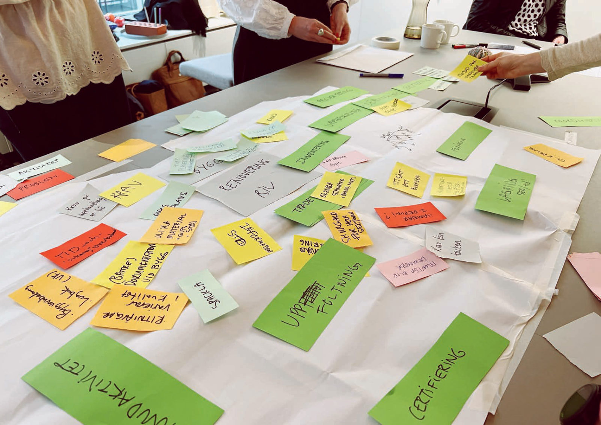
I ett försök att hitta systemkopplingar, roller och möjliga vägar framåt i en komplex, systemisk transformation, jobbar aktörerna visuellt. Det visuella hjälper dem att se och prata om sina respektive utgångspunkter och att formulera utmaningar och möjligheter värda att gemensamt utforska.
Designprocess
En designprocess beskrivs ofta (men absolut inte alltid) i form av en ”double diamond”* som handlar om att röra sig sig mellan att utforska utmaningar och problem, och experimentera med att ta fram nya idéer och möjligheter. Diamantformen handlar om att man jobbar växelvis divergerande (öppnar upp) och konvergerande (begränsar och väljer, smalnar av möjligheter).
- I problemutforskande samlar man kunskap om människor och system, och sedan försöker man genom att anlägga olika perspektiv förstå mönster och formulera problembeskrivningar (obs – i plural).
- När man sen utforskar / skapar möjliga lösningar så öppnar man upp genom att skapa en mängd ideer, och stänger genom att konkretisera några av dess mer och mer - tills man har konkreta konceptförslag.
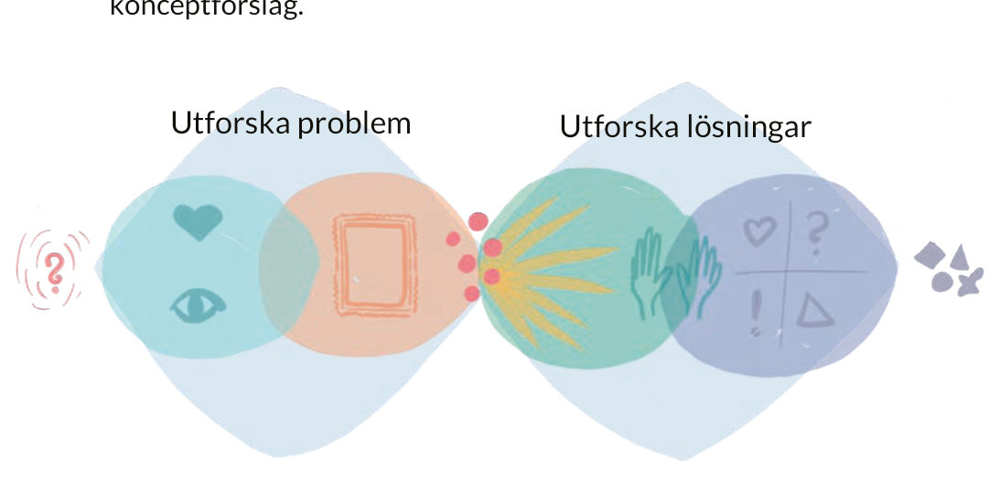
*Double Diamond har sitt ursprung i forskning om kreativa processer i matematik från början på 1900-talet.
Ser det linjärt ut? Några viktiga poänger:
- Processen är iterativ, vilket innebär att man jobbar i upprepade cykler, i takt med att man lär sig mer. Det kan handla om att söka mer information, gå tillbaka till att omformulera frågorna, utveckla olika idéer och uttryck.
- Vi undviker att prata om ”problem” och ”lösning” eftersom båda antyder att det är ETT problem och EN lösning. Snarare handlar det om utmaningar, möjligheter och en komplexitet som man tar sig an genom designmetodik, och där man landar i något som är bättre än idag.
- Midjan är inte så smal som det verkar. Att det finns många problem och möjligheter - snarare än ett problem och en lösning på det – illustreras av de röda prickarna i bilden. Genom att arbeta i flera cykler med flera perspektiv, arbetar man organiskt med det som är komplext och mångfacetterat. Att fokusera på ett välformulerat problem åt gången kan dock underlätta experimenterandet – så länge man är medveten om att det sen finns fler och alternativa vägar.
- De gula strecken illustrerar att man även utforskar ”idé-rymden” genom att skapa temporärt snäva ramar för idégenerering, och att man itererar processen i flera riktningar genom att ta olika frågeställningar som utgångspunkt.
- Det finns många möjliga lösningar på en och samma problematik, och varje iteration kan göra att man hamnar i olika riktningar. Den oregelbundna formen på det som kommer ut – koncept, lösningsförslag osv – visar på detta. Allt blit temporära steg i ett flöde.
Höger och vänster hjärnhalva
Psykiatern och neurovetaren Iain McGilchrists teori om hjärnhalvornas distinkta sätt att bearbeta världen, har djupa implikationer för sense-making och meaning-making – något som genomsyrar utforskande. McGilchrists argumenterar för att vänster hjärnhalva är fokuserad på detaljer, analys och sekventiell logik, medan höger hjärnhalva hanterar helheter, kontexter och relationer. Dessa två sätt att förstå världen speglar en fundamental spänning mellan fragmenterad kunskap och sammanhängande mening.
Sense-making, som handlar om att strukturera och tolka information för att navigera verkligheten, ligger nära vänster hjärnhalvas funktion. Den skapar en karta av världen genom att kategorisera och förenkla, vilket gör det möjligt att agera snabbt och effektivt. Detta är avgörande i tekniska och operativa sammanhang, där precision och tydlighet är nödvändiga.
Meaning-making är däremot mer relaterat till höger hjärnhalvas kapacitet att se det större sammanhanget. Mening uppstår inte ur isolerade fakta, utan ur relationer, kontexter och ur den upplevda helheten. Höger hjärnhalva integrerar och tolkar det vi upplever, vilket skapar en djupare förståelse av världen och vår plats i den.
Problemet, enligt McGilchrist är, att den moderna världen präglas av en dominans av vänster hjärnhalvas perspektiv. Vi tenderar att prioritera det som är mätbart, kvantifierbart och direkt användbart, men vi riskerar att förlora känslan av djupare mening. När meaning-making försvagas, reduceras världen till ett system av mekaniska processer snarare än en levande, sammanhängande helhet.
För att återställa balansen krävs en återgång till höger hjärnhalvas sätt att uppleva världen – där vi kan förstärka vår känslighet för kontext, relationer och för det subtila. Bara genom att återskapa en bättre balans mellan hjärnhalvorna kan vi skapa en meningsfull förståelse av tillvaron, där kunskap och djupare insikter förenas.
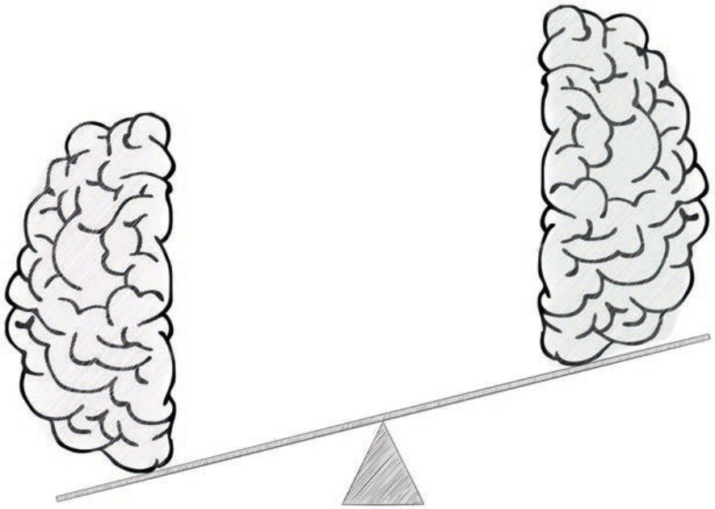
Prototyper och att prototypa
Att prototypa är som vi ofta återkommer till, en viktig del av en designmetodik, som ett led i dess utforskande utgångspunkt. Enkelt uttryckt kan man säga att prototypande handlar om att skapa något som går att ta på eller interagera med (ett ting - en modell, struktur, en grej) eller uppleva (en fiktiv berättelse, ett scenario som rollspelas, en dikt, en fysisk miljö).
Det handlar om ett tillfälligt steg, och vi använder det som en naturlig del av vår utforskande process, där prototyperna är enkla och tillfälliga representationer att interagera med som en del i att utveckla och testa idéer.
Designforskare beskriver en designers arbetssätt som ett ”estetiskt utforskande”, där materiella praktiker – att interagera med material på något sätt - står i centrum för lärande. Ibland kan att knåda lera planlöst, eller att skissa utan mål, vara det som ger upphov till idéer och insikter. Idéskapande och prototypande är alltså tätt sammanblandade. Det här hänger också ihop med balansen mellan höger och vänster hjärnhalva.
”Snabbt och slarvigt”: En viktig princip när vi prototypar är att det inte ska vara så exakt och färdigt – ju snabbare och billigare en prototyp kan bli till något faktiskt att just reagera på, desto större möjlighet att det blir något som hjälper oss framåt.
Att vara mer noggrann och värderande saktar ner processen, och kan skapa känslor av att det måste vara snyggt och ”bra”. Framförallt kan det låsa in en i lösningar som man gillar så mycket, att man inte är öppen för att ändra på något eller ta de nödvändiga kliven tillbaka. Vi pratar alltså inte om en nästan färdig representation av en produkt. Utan om just det vi beskrivit ovan.
Framtidsprototyper: När vi skapar saker som framtidsvisioner, berättelser och interaktiva upplevelser, kallar vi ofta det resultatet för protoptyper, eller spekulativ design. Det är för att det handlar om förslag att reagera på kring hur framtiden skulle kunna se ut - inte en bild av hur vi tror att framtiden ser ut (med någon slags falsk säkerhet).
Vi återkommer till prototypande igen i kapitel 8, när vi diskuterar dess roll i förhållande till att facilitera transformation, utveckla transformationsförmågor och ta fram möjliga framtider.
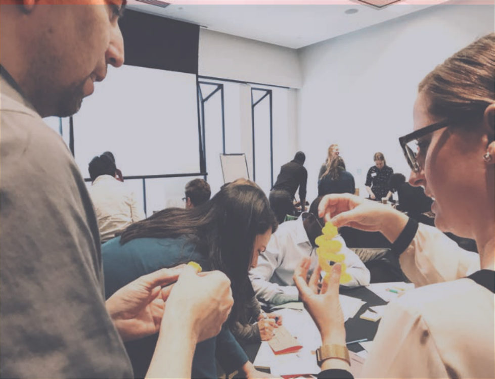
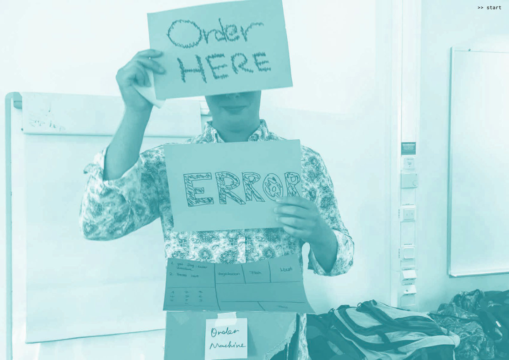
Experimentellt utforskande i systemisk transformation
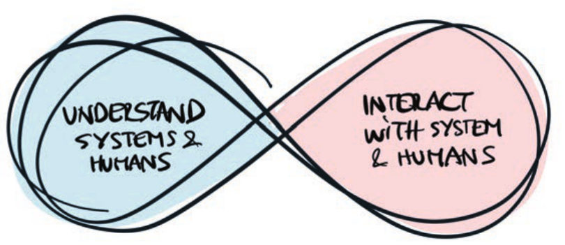
Istället för med en ”double diamond”, illustrerar vi här processen som en evighets-åtta. Loopen visar på avsaknaden av en tydlig början och slut när vi jobbar i transformationsprocesser, men också på den intima sammankopplingen av aktiviteter. Det är genom att testa saker i system som man förstår dem, och vice versa. Känslan och insikten kan uppstå mitt i görandet. Här är processen helt beroende av att vi använder både höger och vänster hjärnhalva. Det vi gör är att:
- Förstå människor och system. I skapandet av en ny logik behöver man förstå vad som ska bevaras, vad man kan släppa och vad som ska växa fram. Det kan vi göra genom att dels undersöka systemet från olika perspektiv, och dels genom att samla in insikter om behov bland de aktörer som på olika sätt påverkas av förändringen. De som driver den, men också alla de som påverkas, drabbas eller får nya möjligheter genom transformationen.
- Hitta komplexa ”problem i problemen”. Att på djupet jobba med insikter av god kvalitet kan ge upphov till en mängd möjligheter och ”problem i problemet” . Dessa kan visa sig vara nycklar till att ta sig fram, trots att vi inte såg dem från början. Sambanden är komplexa och det är svårt att veta var man ska börja – vilket leder till att man behöver testa olika idéer i verkligheten.
- Interagera med och provocera systemet. Genom att experimentera och testa, ser man hur systemet och människor reagerar, och kan få insikter om vad som kan skapa riktning framåt. Det kan innebära att man experimenterar med nya arbetssätt, rutiner, processer eller teknologier i de lokala sammanhang där man verkar – till exempel i en kommun, i ett pilotprojekt, eller i en testbädd. Ibland vet man var man skulle vilja börja utan att den möjligheten finns – då får man använda sin kreativitet till att hitta andra sätt att testa sig fram och bygga kunskap.
- Iterativt – upprepande – med skiftande problembeskrivningar. Det handlar om att röra sig mellan att förstå system och människor, och att utforska vägar framåt genom att experimentera och interagera. Processen drivs genom att man formulerar och omformulerar problem och målbilder allteftersom insikter och erfarenheter byggs. Vad är viktigt baserat på det vi vet nu, och vad kan vi testa nytt?
- Skiftande problembeskrivningar: System-utforskande = designprocess. Här tänker ni kanske – men oj, låter inte det här exakt som de designprocesser ni beskrivit innan? Jo, precis så. Det är därför vi gång på gång lyfter fram design som ansats och inspiration när det handlar om transformation! Och det är därför vi uppskattar att samarbeta med designers och konstnärer, för de hjälper oss att kliva utanför de ramar vi ofta fastnar i.
Systemisk design
Systemisk design bygger på en kombination av designtänkande och systemteori. Vi rör oss mellan båda.
Fokus inom systemdesignfältet har ofta legat på att skapa överblick och struktur genom visuella verktyg som systemkartor, aktörsnätverk och feedback-loopar. Designers samlar in flera perspektiv, de modellerar helheter och föreslår lösningar. Även om alla deltagare ofta lyfts som viktiga i exempelvis en transformationsprocess, har det ändå varit experter (såsom designers), som haft makten att definiera system och målbilder. Det här är något som nu har börjat kritiseras och omförhandlas inom fältet.
Josina Vink är forskare och professor i tjänstedesign på Arkitekturhögskolen i Oslo (AHO). Hon har med utgångspunkt i sin långa erfarenhet från arbete med systemisk design inom vården, formulerat ett annorlunda sätt att förstå och använda systemisk design. Hen baserar det på pragmatisk filosofi, feministisk teori och samtida designforskning.
I stället för att börja med abstrakta systemkartor, handlar det om att utgå från det människor redan gör i sin vardag; deras relationer, vanor och kroppsliga sätt att vara i världen. Att fokusera på de här vanorna är något som kan adresseras med design – något att undersöka, förskjuta och forma tillsammans.
Relationer och nya sätt att samspela blir därför centrala – både som metod för att åstadkomma förändring och som mål i sig, kopplat till systemskiften. Josina Vink föreslår att vi använder även sånt som friktion som en resurs: att stanna kvar i det som skaver synliggör normer och öppnar upp för nya möjligheter. Genom att förstå design som en förkroppsligad, pågående praktik kan fler bidra till transformation, även om de inte nödvändigtvis är designers.
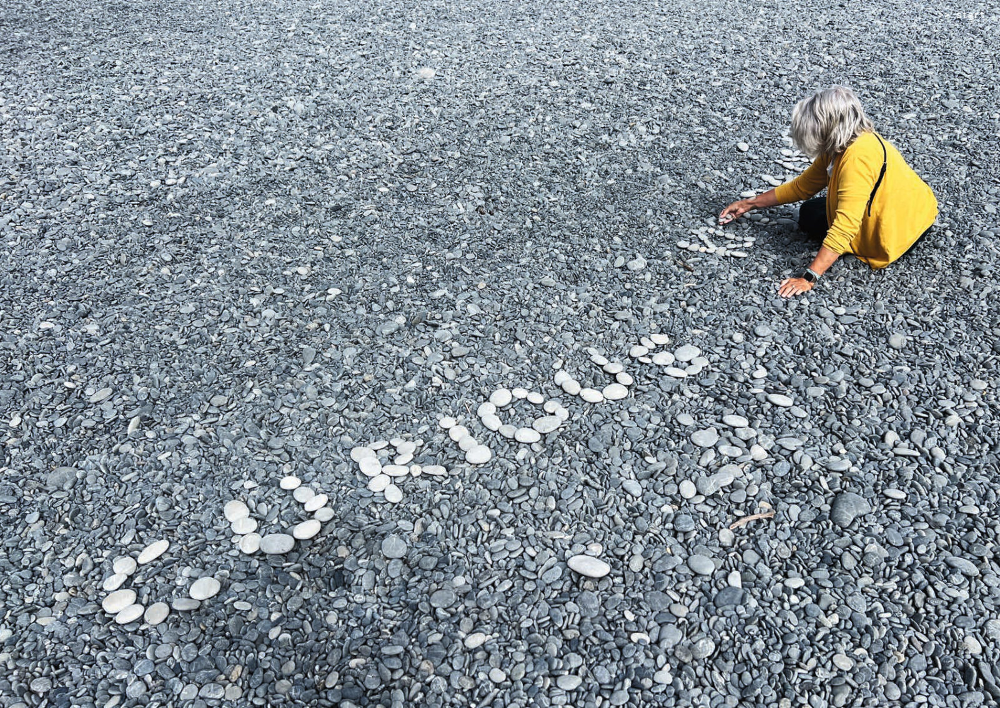
Designmönster – att hitta ”vad som ofta funkar”
Många av oss är nog överens om att det oftast inte finns någon “one size fits all”, och speciellt inte när det gäller de komplexa frågor vi idag står inför. Trots det finns det kvar starka ideal från naturvetenskapen - att det ska finnas modeller och processer som är universellt tillämpbara för att förklara och förutsäga varför och hur något händer. Sådana modeller kan ha sin plats i redan mogna sammanhang, men inte i såna som växer fram.
Men även i komplexa sammanhang kan utmaningar och förutsättningar som liknar varandra uppstå. Man kan därför inspireras av tidigare upptrampade spår, väl medveten om att det inte kommer att se exakt likadant ut nästa gång. Det kan också vara så att man i sin egen kontext kan börja skönja mönster kring hur saker hänger ihop, och den kunskapen om den egen organisationen kan man sen använda för att jobba med förändring.
Man kan kalla det här för designmönster – mellanhöga abstraktioner som ligger någonstans mellan det standardiserade och skräddarsydda.
Alla i en kommun behöver kanske inte gå samma standardutbildning, men vi kan inte heller individanpassa allt. Med hjälp av mönster kan vi jämföra och hitta analogier i andra discipliner, andra sätt att prata. “Vad gör en enskild kriminalutredare och hur hjälper det mig att förstå helheten...”. “Vilken generell förmåga kan jag se behövs och hur kan jag utveckla ett spel som bygger den förmågan”.
Med längre erfarenhet blir det lättare att förstå när en standardlösning kan användas som utgångspunkt, och vilka faktorer i kontexten som kommer kräva anpassning.
”Saker som funkar” – men på lagom hög abstraktionsnivå
”Att vi kallar dem designmönster betyder inte att någon designade dem med ett syfte. Ofta växer de fram organiskt, som när man ser att ett visst tillvägagångssätt ofta fungerar. När andra sen lär sig av detta, så kan mönstren spridas för fler att inspireras av”.
Att jobba med designmönster
Att jobba med designmönster handlar om att röra sig på den här mellanhöga nivån och såväl observera som analysera återkommande mönster.
Genom att identifiera viktiga elemenet och samband kopplat till en viss typ av fenomen, får man en ny förståelse för problemen och hur man ska ta sig an dem. Man kan sedan hitta kopplingar – se hur allt hänger samman, vad som är förenligt och vad som absolut inte går ihop. Man kan se vilka problem som är de centrala och som andra faktorer beror på.
De problem man försöker lösa har också olika abstraktionsnivåer, och man gör sig själv en tjänst om man precis som med mönstren, formulerar dessa på en ”lagom” nivå. Det blir ett iterativt arbete där olika designverktyg för mappning och problemformulering kan komma väl till pass.
Man hamnar ofta i en kedja av omformulerade problem, där själva försöken att lösa problemet sen skapar nya problem att adressera.
”I en workshop tog vi händelsen i Örebro som exempel för att förstå såväl mönster i fenomenet skolskjutning, som i den efterföljande samhällsdebatten. Vi gjorde liknade med kabelbrotten i Östersjön. För att förstå systemisk komplexitet måsta man utforska flera nivåer och perspektiv samtidigt.
Om vi inte förstår fenomenen på djupet, är risken överhängande att vi försöker lösa fel problem. Hot och våldsyttringar i samhället är ofta symptom på svårgreppbar komplexitet, och inte sällan fokuserar samhällets problemlösning på att snabbt lösa de synliga delarna av problemen. Men det behövs handlingar och strategier som också adresserar rotorsaker, och som tillsammans med fler tankemodeller skapar förutsättningar för transformation. Det är här man kan använda designmönster för att både förstå - och genomföra - förändringar på systemnivå.
— Erik Bakkman, strateg RISE,(fd Polismästare NOA)
Tips: Att ”tänka” designmönster och anpassa nivån
Skuggning, peer to peer och lära av andra. En del i att identifiera och skapa designmönster som fungerar, handlar om inspiration och ”datainsamling”. Skuggning och peer-to-peer-coachning är metoder som kan hjälpa till att sprida nya arbetssätt och bygga kapacitet, men de kan också också bygga en förståelse för vad som kan fungera (och inte). Arbetet underlättas när förändringsledare från olika delar av organisationen samverkar.
Var uppmärksam på verktygens abstraktionsnivå och kontextens krav. Ett arbetssätt som fungerade i en annan organisation, kanske inte passar i din. Var känslig för skillnader i kontext och förutsättningar, när du tar inspiration från arbete som gjorts någon annanstans.
Att tänka i designmönster. En viktig del av arbetet är att känna igen när en metod du sett fungera någon annanstans, faktiskt passar dig eller din verksamhet. Det handlar om att välja och kombinera aktiviteter från olika sammanhang, utifrån de behov som finns där du arbetar.
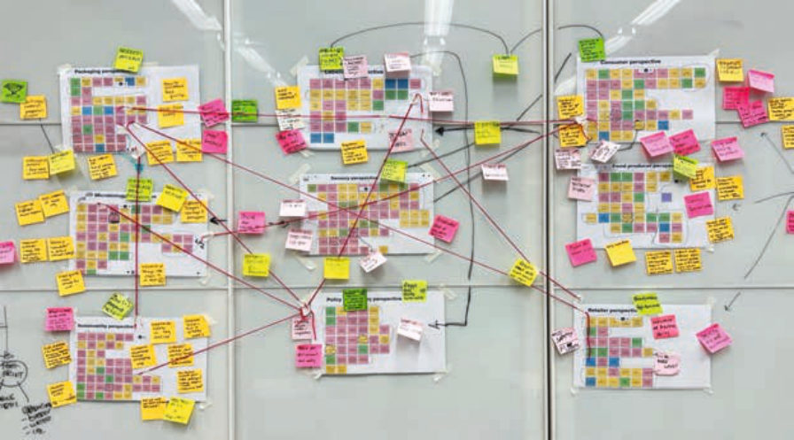
Kraften i berättelser
Berättelser som verktyg för förändring
Människan har i hundratusentals år använt berättelser för att förstå och navigera komplexa sammanhang – det är ett kraftfullt verktyg för att göra förändringar begripliga och engagerande. I en alltmer komplex värld är förmågan att kunna skapa och tolka berättelser, en viktig del av hur vi kan hantera framtidens utmaningar.
- Det som är nytt och otydligt kan få liv och bli mer konkret genom såväl berättelser om framtiden, som historiska exempel, tillämpningar i både närliggande och ologiska miljöer eller genom analogier.
- Berättelser bär på kunskap och engagerar både förnuft och känslor. Genom berättelser kan man därför skapa emotionell koppling och bygga förståelse för behovet av transformation.
- Berättelser är menings- och sammanhangsskapande, de förkroppsligar perspektiv, och de kan inspirera till mod, handling och enighet. När berättelser upprepas kan de förstärka en gemensam identitet inom en social grupp.
- Berättelser stimulerar de samtal och interaktioner som människor behöver för att kunna att mötas i svåra processer. Det kan handla om att släppa taget eller att hantera allt nytt i det som är ovisst.
Historieberättande är en sällsynt och viktig förmåga som handlar om att förstå, förklara, organisera och relatera. Att se hur skeenden i ett sammanhang kan skapa mening i ett annat, och att kunna ta fram kvaliteter som väcker känslor och associationer. Att skapa en berättelse är ett sätt att intuitivt analysera och syntetisera kunskap och erfarenheter som inte går att sortera in i fack. Berättelser kan också ta sig olika uttryck, i poesi, teater, dans, musik, och i olika visuella och rörliga medium.
Men berättelser är inte ofarliga – de kan vägleda men också manipulera, vilket gör det viktigt att använda dem medvetet och ansvarsfullt.
”I en tid av osäkerhet är förmågan att skapa mening och riktning avgörande för att ge team och organisationer trygghet under transformationsprocesser. När vi arbetar med organisationer som står inför förändring använder vi berättelser som verktyg för att skapa en gemensam förståelse för vägen framåt”
När berättande skapar mening och sammanhang
- Berättande och berättelser innebär handling. Vi samlar och skapar berättelser, berättar dem, lyssnar eller tar del av dem – och de handlingar som sker som följd av samma berättande.
- Det handlar om berättelsen som levande objekt, något som skapas och utvecklas. Som vi interagerar med.
- Det handlar om individer inblandade i berättandet - de som berättar, lyssnar och agerar. Man kan se berättelser och berättande som ett perspektiv som genomsyrar förändring.
Exempel: Vi nämnde tidigare samarbetet med Region Värmland för att få en djupare förståelse av frågor kring ungas entreprenörskap och entreprenöriella förmågor – i relation till den stora andelen unga som faller ur skola och arbetsliv. Vi ville förstå mer om hur de bygger förmågor i hela livet, inte bara i skolan där de ofta upplever misslyckanden.
Samtidigt ville vi inte samla information på ett sätt som bara skapade värde för oss och vårt projekt. Som undersökningsmetod valde vi därför att samla mikroberättelser, där vi bad respondenterna att dela en berättelse om när de gjort något de var riktigt stolta över, något som hade varit svårt att åstadkomma.
Vår förhoppning var att respondenterna skulle stärkas – om än på mikronivå – genom att reflektera över och berätta om något de kanske inte annars skulle sett som en styrka hos sig själva. Berättelserna i sig var också ett kraftfullt sätt att förmedla ett alternativt perspektiv på vad det innebär att lyckas och misslyckas, och hur man kan jobba strategiskt för att lyfta det som stärker.
“En gång var när jag skulle ta mitt AM [EPA] körkort, jag har ju dyslexi och jag fick plugga dubbelt så mycket som alla andra. Och så fick jag höra att alla klarade det på första försöket men det gjorde inte jag. Jag fick göra många omprov och plugga väldigt hårt, men till slut så fick jag kortet”.
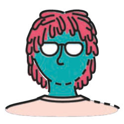
“Jag höll ett tal om kvinnors rättigheter. Sedan sprang jag ut och hade håll; det gjorde ont. Men det gick bra”.
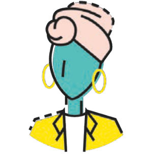
“Min pappa fick ett cancerbesked och jag var tvungen att hålla hoppet uppe och vara stark. Jag kämpade med min mamma och lillasyster”.
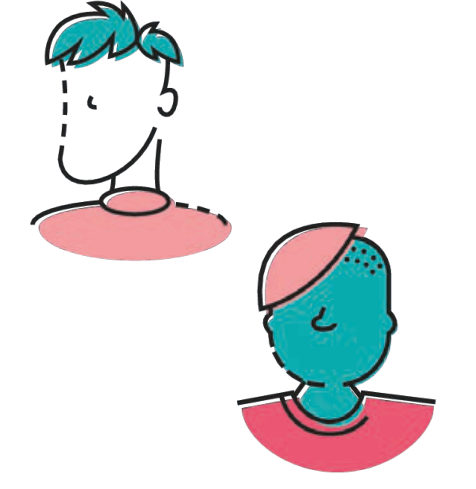
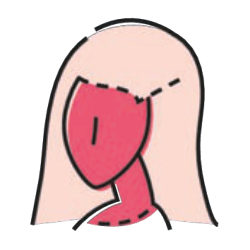
“Asså fattar inte direkt vad ni frågar efter men asså jag försökte ta mitt liv och har gått igenom andra hinder med min hälsa genom depression, självskadebeteende å ätstörningar å nu är det väl lite bättre iaf så det så kan väl va lite stolt över det”
“Igår tog jag till slut tag i och gjorde en uppgift, innan deadline till och med! Jag har extremt lite energi nu för tiden pga sover och äter alldeles för lite så även om det kanske inte låter som ett så stort åstadkommande så är jag faktiskt riktigt nöjd”.
Exempel från praktiken
När vi stör det magiska trädet
Låt barns berättande ta plats
Att uppmuntra barns och ungas berättande kan hjälpa dem att engagera sig i och förstå transformation, och är en form av intergenerationellt lärande. Den här berättelsen skrevs av 14-åriga Guro Kumar, kopplat till projektet ”Det Immersiva Biblioteket” (kap 8, sidan 29_2). Den hjälpte henne att sätta ord på det hon känner för sin omvärld._
Den magiska planeten Det här är en annan planet i en annan galax. En planet hundratals mil härifrån, så långt bort att du inte ens kan föreställa dig.
Denna planet bryter mot de naturlagar som vi har på jorden. Här så kommer inte fukten från havet eller vattnet, utan från träden. Det är träden som gör att grönskan kan växa och överleva, att det mest oskyldiga ogräs kan överleva.
Oavsett om en miljö på denna planet har tillgång till vatten eller inte så är det träden som ger liv. Alla träd ger energi och fukt, möjlighet till liv, men det är det enorma moderträdet som gör allt detta möjligt. Det är ett superstort redwood-träd som ger alla andra träd energi. Det har väldiga rötter som sträcker sig över hela planeten.
Man skulle kunna tro att det här är ett paradis i värmen och naturen, men under natten så sänks temperaturen något enormt. Alla djur och växter är helt anpassade till detta klimat. Evolutionen har gjort att allt nu kan leva oavsett temperatur. Blommorna stänger sig och djuren får tjockare päls.
Den förödande kejsaren För länge sedan var denna planet en fridfull plats. Utan konflikter eller problem. Alla levande och icke levande varelser levde i harmoni tillsammans. Från de högsta bergen mitt ute i oceanen bland vågor och vind, till de minsta små insekterna i de dimmiga träsken. Överallt var det frid och fröjd. Träden gav liv till allt och alla.
Man trodde att historien kunde få sluta så, men så plötsligt bara för några år sedan, kom det en främling till denna planet. Någon som inte var familjär med miljön. Det var en kejsare, van vid att allt och alla lydde honom. Så han reste ett stort tempel på det högsta berget för att säga: “Jag är bäst och störst, ingen kan klå mig”. Det var meningen med templet, och såklart tyckte han att det var skönt med tjänare och innebassänger med inbyggda discolampor.
Han trodde att han var väl förberedd för att flytta till denna nya planet. Men det var en sak han inte hade räknat med, temperaturen! Så när han flyttade dit blev all hans planering förgäves.
Han frös varje natt. I dagar och veckor. Oavsett hur många lager strumpor han hade eller antalet antika filtar, han frös.
Så efter exakt en månad och tolv dagar så började han hugga ner skogen i hopp om att få sova om nätterna. Han visste inte att det skulle störa ekosystemet. Långsamt blev de gräsfyllda vidderna och bergen till en öken. Torrt, utan ett tecken på minsta lilla liv. Alla möjligheter för att liv skulle kunna överleva, försvann.
Kejsaren hade till och med skurit sönder moderrötterna i hopp om att det skulle brinna bättre. Den förödande öknen sträckte sig nu från kejsarens palats och över hela planeten och började långsamt närma sig moderträdet. Dag efter dag så blev öknen större och den levande naturen mindre.
Det hade blivit ett hot mot planeten och ekosystemet. Om kejsaren i vår berättelse fortsätter att hugga ner alla träd och använda dem som bränsle, så kommer planeten som en gång lyste upp universum, att dö.
Den här typen av berättelse kan öppna upp för en mängd olika samtal om samhällskritik– och om vad som är viktigt och etiskt, och hur man kan jobba för att undvika en sådan här situation. Genom den här berättelsen kan vi se vad vår 14-åriga skribent har för förståelse och vad hon oroar sig för.
När berättelsen förändrar allt - universella och lokala berättelser
Exempel: Ett innovationsprojekt på Kaiser Permanente (en av USA:s största idéburna vårdorganisationer) landade i ett nytt arbetssätt. Resultatet blev att sjuksköterskor skulle göra sitt skiftbyte och all informations-överlämning inför patienten, istället för på ett kontor. På så sätt skulle man skapa trygghet för patienten genom att visa att inget fallit mellan stolarna.
Idén möttes först av kraftig kritik från de anställda. Men så vid ett tillfälle där man just testade det nya arbetssättet, upptäckte sjuksköterskorna att en kateter hade lossnat och att patienten låg och riskerade att förblöda till döds. På grund av det nya arbetssättet kunde den patienten räddas. Berättelsen om den händelsen var så kraftfull att den bidrog till att även de mest hårdhudade skeptikerna var villiga att testa det nya arbetssättet, som sedan implementerades.
Medan vissa berättelser är universella, såg man i detta exempel att även lokala berättelser var nödvändiga för att få medarbetare att känna att ”det här relaterar till mig, det här kan vi inspireras av på min arbetsplats”. Ofta finns en känsla av att den egna enheten är så unik att det som fungerat någon annanstans, inte kan fungera i den egna hemvisten. Eller att man har svårt att se hur en erfarenhet i ett sammanhang kan omtolkas till ett annat. Därför är den här ”narrativa intelligensen” någonting som behöver odlas brett.
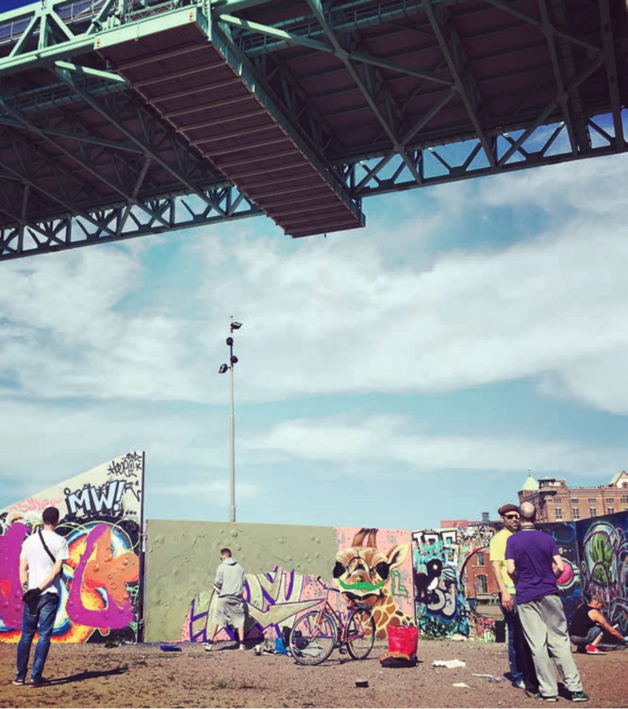
Det är lätt att tänka att berättelser måste berättas med ord. Men de kan bäras av olika medier: talade, nedskrivna, som poesi, musikstycken, dramer som uppförs eller improviseras, som dans, eller i bilder. Moderna berättelser finner vi i exempelvis i hiphop och graffiti. Hur tas olika typer av berättelser emot, och vad väcker de hos oss?
Vad betyder en berättelse för olika mottagare, och vilka berättelser påverkar våra beteenden? Stenålderskonst i Utah, konst som beskjutits med pistol och taggats med namn och tillägg. Vi kan dels lära av berättelsen som vi tror den är tänkt, genom belysning av olika perspektiv. Eller genom att undersöka människors beteenden i relation till berättelsen.
Berättelser som lever länge
Tusenåriga handmålningar av Pueblo-folket i Arizona. Vad händer med berättelser och symboler som glöms bort? Dessa skapades av ursprungsfolk vars ättlingar under århundraden tolkat, omtolkat och levandegjort. Det har byggt en kunskap som gått i arv och som fått ny mening när livsvillkor förändrats.
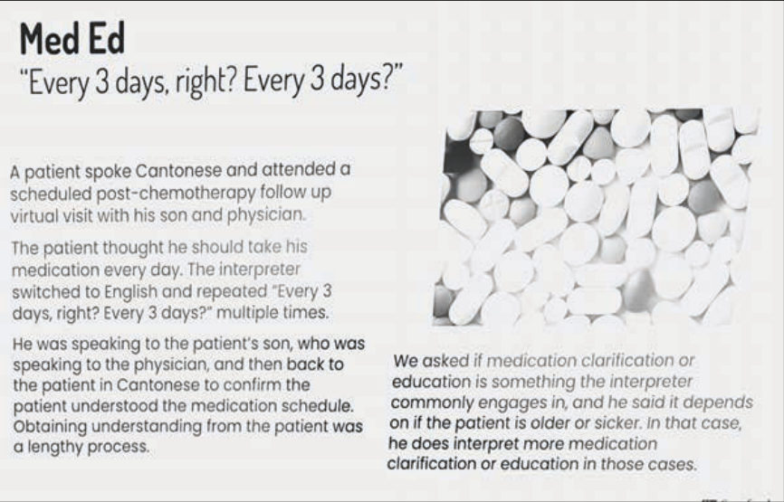
Tips för att använda berättelser
Språk och metaforer som möjliggörare
Språk som möjliggörare
Genom att använda nya uttryck kan vi inte bara beskriva komplexa sammanhang, utan också påverka hur vi förstår och agerar i dem. Att prata om samskapande, resiliens och transformation signalerar en rörelse bort från gamla förvaltningsmodeller, mot en mer inkluderande och dynamisk framtid.
Hur ord uppfattas ändras hela tiden och ibland går det fort när ord som tidigare känts neutrala laddas med politisk innebörd. Det kan vara givande att reflektera över sådant som:
- Hur bidrar ord och uttryck i sig till förändring?
- Vad signalerar det när vanliga, etablerade ord ges en ny innebörd?
- Vilka är de nya orden som signalerar att något ändras?
- Hur förhåller vi oss till kunskap när världen skapas?
- Hur uppstår språk och fackspråk kopplade till praktiker?
Exempel: Genom att Skatteverket bytte ett enda ord i sin syftesbeskrivning – från "Sveriges medborgare skall betala skatt" till "Sveriges medborgare vill betala skatt" så lyckades Skatteverket katalysera en stor kulturell och strukturell förändring och effekt inom myndigheten.
”Språket vi använder speglar våra tankemodeller och formar hur vi ser på världen.”
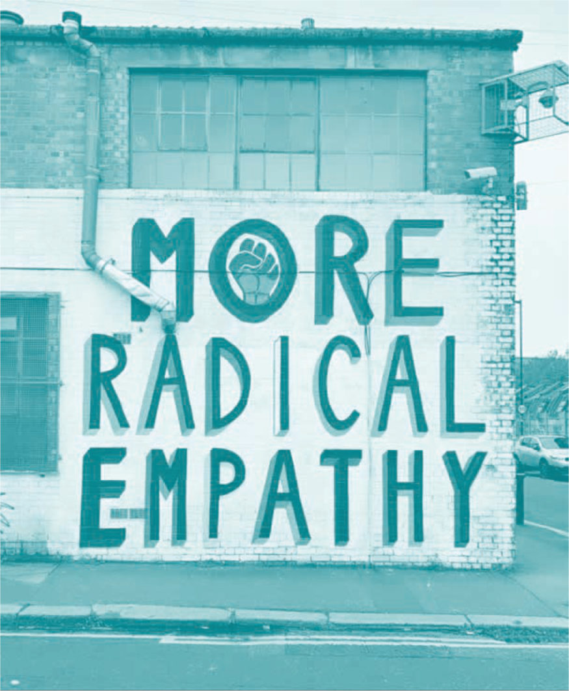
Exempel från praktiken
Vem tjänar på din uppmärksamhet?
Osynliga villkor kräver nya begrepp
Exempel begreppet användardriven dataekonomi: Traditionella perspektiv har ofta betraktat konsumenter som passiva mottagare av varor och tjänster. Utvecklingen av sociala medier har dock förändrat detta synsätt. Idag deltar användare aktivt i att skapa, dela och forma innehåll, vilket har möjliggjort framväxten av en användardriven dataekonomi. Här är individer inte bara konsumenter, utan även producenter av värde, exempelvis genom att bidra med personlig data och engagemang.
Sociala medier erbjuder "gratis" tjänster där användare betalar med sin tid, sin uppmärksamhet och sina personliga data istället för pengar. Dessa resurser är avgörande för sociala medieplattformarnas affärsmodeller och har gjort att individer blivit centrala aktörer inom plattformsekosystemen. För att förstå och analysera dessa förändringar krävs att vi identifierar nya begrepp och tydligt definierar dem.
Begrepp som "användardriven dataekonomi" och "nollprisanvändare" hjälper oss att belysa hur makt och värdeskapande fördelas i den digitala ekonomin.
à Digitala system kan hålla kvar makten genom att dölja hur data används – och gör det svårt för användare att ta kontroll.

_(Läs mer i Martin Mileros avhandling https://liu.diva-portal.org/smash/record.jsf?pid=diva2%3A1941404&dswid=2241)_
Kraften i metaforer och positiva uttryck
En metafor är som ett mellanting mellan en bild och ord – den skapar ofta en bild i medvetandet, och kan också trigga igång associationsprocesser och därmed kreativitet.
Professorerna i lingvistik, filosofi & kognitiv vetenskap; George Lakoff och Mark Johnson, skriver om hur olika kulturer har sina egna metaforer som också påverkar tankemönster och logiker:
I USA finns uttryck som; ”tid är pengar”, ”slösa tid”, ”spendera tid”. Detta kan göra att vi börjar se tid som en resurs eller valuta – något man äger eller investerar, snarare än upplever. Tiden kan också genom den typen av uttryck bli något man bara mäter i effektivitet, vilket förstärker ett produktivitetsideal.
”Jag upplever att man behöver vara försiktig med vilka ord man använder, eftersom orden påverkar människor mer än man tror. Sök efter positiva metaforer, såna som öppnar upp för lekfullhet eller för att övervinna hinder. Om man använder uttryck som ”svarta hål” när man talar om hinder, riskerar man att förlora det som är spännande med att ta sig runt dem. Man kan till och med fastna i gnäll. Om man istället söker ord som för tanken till att jobba runt hinder, kan man ta fasta på det som är smidigt. Kanske kan man koppla det till lurendrejare, som Loke-figuren i Marvel. Andra uttryck som ger energi kan vara att spinna vidare, rida på vågen, hitta kryphål osv.” - Christi Zuber, Aspen Labs – ett nätverk för designdriven innovation i komplexa system.
”Jag går i princip alltid på metaforjakt när det gäller bilder. Det kan vara att jag går från jobbet och ser något som kan koppla till en utbildning jag ska hålla, och tar ett foto med telefonen. Det låter kanske tråkigt, men jag tänker ofta i Powerpoints när jag är i ett planeringsstadium, och då går jag omedvetet och letar bilder som kan illustrera det jag vill säga. Att leta de här metaforiska bilderna är också ett sätt att själv förstå mer kring vad jag vill förmedla, så berättelsen brukar bli bättre när jag hittat rätt bild”.
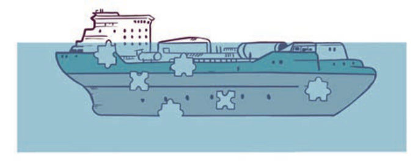
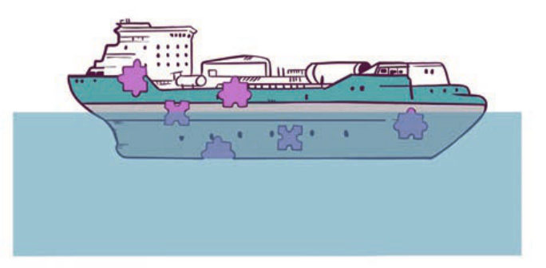
Exempel från praktiken
Exempel: Kryssningsfartyg, expedition och snabbspår
Karin Lycke, innovationsledare på Kungsbacka Kommun, berättar:
”Vi började använda språk mer medvetet när vi tog fram en modell för förnyelse och missionsdriven innovation i offentlig sektor. Vi ville hitta ord som kunde skapa energi, inte bara beskriva processer. Metaforer blev ett verktyg för att hjälpa andra att förstå – och vilja vara med.
Ett exempel är expeditionen. Vi ser kärnverksamheten som ett tryggt kryssningsfartyg – men ibland måste vi lämna det och ge oss ut i okänt vatten, på en expedition. Vi söker, provar, hittar nya vägar – och dockar sedan tillbaka med det vi lärt oss.
Men alla utmaningar kräver inte en expedition. Därför utvecklade vi också “snabbspåret” – en ingång där vi kan identifiera om någon annan redan har löst ett liknande problem. Det är lockande att ta “snabbspåret”, men för att få göra det måste man svara på ett antal frågor. Hur stort är problemet? Vem upplever eller äger det? Har någon redan testat en lösning? Vi kallar det att “glo och sno”. Det handlar inte om att kopiera slentrianmässigt, utan om att lära smart – och hållbart.
Vi behöver tänka på att det vi skapar ska kunna användas av andra i nya sammanhang. Det kräver tid för att berätta vad man faktiskt har gjort. Och det kräver ett språk som gör det begripligt. För mig handlar det om att skapa berättelser och begrepp som både håller i praktiken och väcker engagemang. Språket är inte bara ett verktyg för att förklara – det formar hur vi ser på allt vi gör.

Exempel: bildspråk som formar arbetssätt
Exempel: På IBM gjorde man en resa i kulturell transformation under ett antal år. Man ville medvetet gå från en ingenjörstung arbetskraft och kultur, till en som var mer designinriktad och agil. Som del i detta skapade man ett eget designspråk med metaforer som var unika för IBM – här ville man knyta an till IBMs unika logotyp och hur den tagits fram decennier tidigare.
Istället för att prata om sånt som delmål och kundundersökningar, så myntade man bland annat begrepp som ”hill” - berget man ser framför sig på vägen. Man tog även fram grafiska ikoner för detta, samt givna format och frågeställningar som distribuerade team kunde samsas om och arbeta med i exempelvis en sprint på sex veckor. ”Playback” var ett annat begrepp – som illustrerar ett tillfälle där man delar berättelser från kundinteraktioner, med fokus på att det verkligen handlar om djupare intryck, inte bara på lösryckta insikter. ”The loop” – blev IBMs egen tolkning av metoden design thinking, där hills och playbacks ingår.


Språk bär kultur

Den här illustrationen är målad på en glasvägg på IBMs kontor i Austin, Texas. Bredvid kan man läsa ett citat av Nobelpristagaren G.B. Shaw:
”The reasonable man adapts himself to the world. The unreasonable man persists in trying to adapt the world to himself. Therefore all progress depends upon the unreasonable man.”
IBM skiljer på “tama ankor” (de som gör som de blir tillsagda) och “vilda ankor” (kreativa nytänkare) – och låter de vilda ankorna vara, istället för att försöka tämja dem.
Bilder, metaforer, ord, och hur dessa får ta plats i rummet, är en påminnelse om att kultur är något vi skapar tillsammans. Hur vi pratar och vilka ord vi använder spelar roll. Vi kan välja hur vi väljer att fylla eller tämja vår anka.
Språk som stöttande struktur
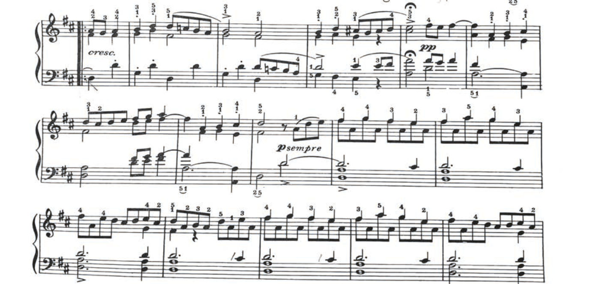
Att jobba med språk handlar inte bara om vilka ord vi väljer eller skapar. Det handlar också om att skapa eller tillgodogöra sig strukturer och verktyg som sätt att uttrycka sig eller skapa nytt.
Systemet för att skriva och läsa noter är ett sådant språk, grammatik och alfabet är andra.
Oftast lönar det sig att bygga på det som redan finns, men ibland behöver man skapa något helt nytt.
Exempel: I nuvarande Sydkorea skapade Kung Sejong själv 1443 ett helt nytt koreanskt skriftspråk - Hangul - som ett sätt att demokratisera skrivande. Han såg att användningen av kinesiska tecken låste in undre klasser i strukturer och informationsunderläge, på ett sätt de inte kunde ta sig ur. Skrivsystemet är mycket enkelt och bygger på munhålans, läpparnas och tungans form vid olika uttal. Under historiens gång förbjöds det här alfabetet av olika kolonisatörer, så det fick en politisk sprängkraft och kopplades starkt till nationell identitet. Idag firas Hangul-dagen som nationell helgdag i Sydkorea.
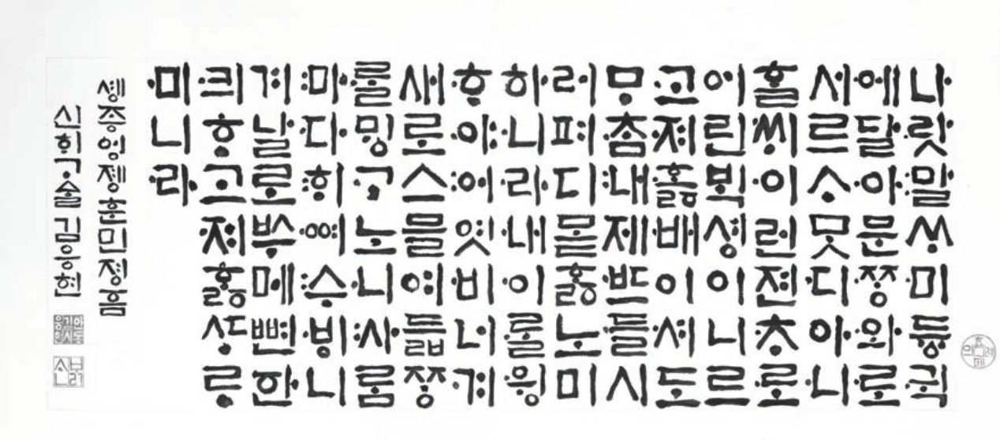
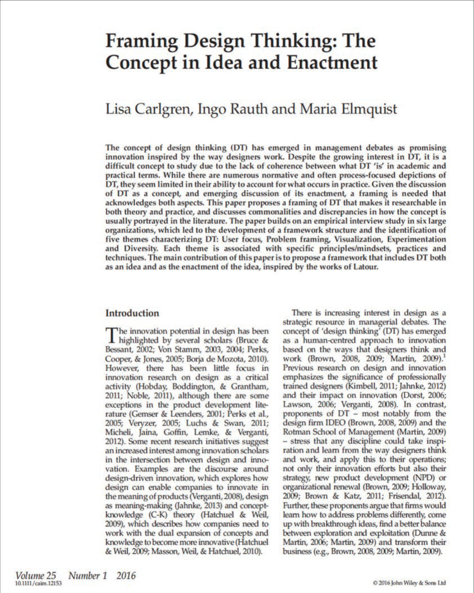
Nytt språk möjliggör
utforskande
Vi forskare jobbar också med språk genom skapa begrepp, ramverk och modeller som andra kan använda för att uttrycka sig – strukturer och vokabulär som kan skapa ny mening och vidga perspektiv.
I artikeln till vänster gjorde vi precis detta, vi skapade ett ramverk som hjälper organisationsforskare, praktiker och utbildare att tala om arbetssättet Design Thinking (DT) på ett nytt sätt.
När vi skrev artikeln för drygt tio år sedan så saknades ett språk kring DT – de flesta beskrivningar av DT var pedagogiska eller säljande – en schematisk process eller bollar som visade vilket värde som (mystiskt) skulle skapas med hjälp av DT.
Dessa beskrivningar var inte till någon hjälp när det gäller att förstå hur DT kan implementeras och integreras i andra arbetssätt, eller vilka utmaningar som uppstår. De hjälpte inte någon att förstå vad som egentligen händer när DT används.
Baserat på intervjuer i verksamheter med lång erfarenhet av att använda DT, identifierade vi gemensamma nämnare, och skapade en struktur där vi beskrev DT på ett sätt som inrymde olika typer av praktiker. Exempelvis som ett fokus på specifika verktyg, eller som en tydlig process, eller snarare som ett sätt att tänka.
Det språkliga mötet mellan etablerat och nytt
Tänk ett scenario där vi vill införa ett nytt arbetssätt, tankesätt, eller utforska nya möjligheter i en organisation. Om man känner att det nya är för konstigt för att få fäste eller ens förstås i organisationen, så kan man med fingertoppskänslighet anpassa budskapet eller orden man använder så att det bättre kan accepteras. Här finns både dilemman och möjligheter.
Att använda “mottagarnas språk” kan bli ett sätt att skapa legitimitet och förståelse. De som är kulturellt eller ämnesmässigt flerspråkiga har stor potential att skapa kopplingar och bryggor, möjliggöra lärande och katalysera implementering. Det är också en fördel att kunna koppla det nya till något befintligt.
Men mötet mellan något nytt och något etablerat kan gå till på olika sätt vilket är intressant och behöver beaktas. När de kanadensiska forskarna Louzeau, Langley och Denis studerade införande av nya managementkoncept på sjukhus i Montreal, såg de en del risker kopplat till detta. De skrev artikeln “Hur managementidéer förstörs” om hur de ofta såg att förändringar och ”nya” processer “implementerades” – genom att ingenting egentligen förändrades. Man bytte helt enkelt bara namn till något nytt, på befintliga arbets- och tankesätt.
Exempel: ”Nu jobbar vi agilt”, fast man egentligen fortsatt jobba på samma sätt som man alltid gjort. Det var inte riktigt tanken, och framförallt uppnådde man inte den potential som fanns.
Det finns en hel del att reflektera över, vad gäller spänningen i detta. När man inför något nytt för att skapa förändring, måste man balansera de här olika delarna. Å ena sidan riskerar man att helt alienera sig genom att använda fel språk, där allt nytt blir obegripligt. Å andra sidan kan man också urvattna olika begrepp totalt genom att anpassa dem till rådande situation och kultur – och därigenom gå minste om potentialen till förändring. Skavet här emellan är det som skapar utveckling, men inte om det skaver så mycket så att det stöter bort människor.
Konsten att förenkla (lagom mycket)
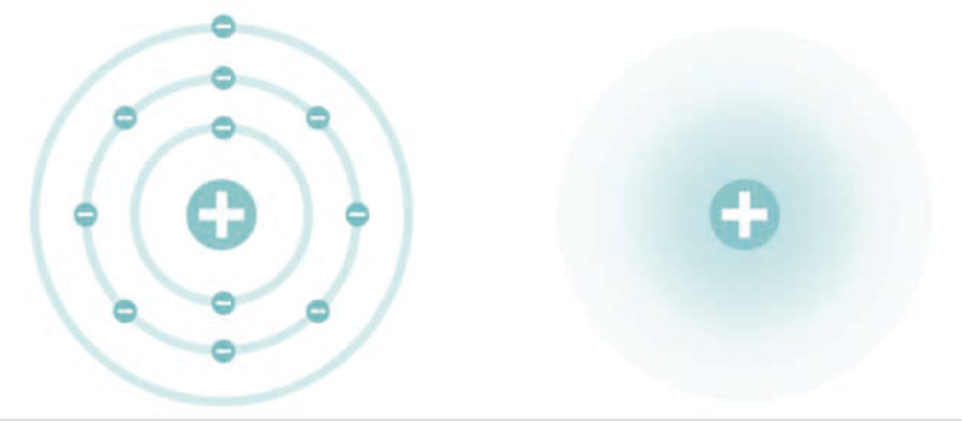
Exemplet Bohrs atom-modell. Under sent 1800- eller tidigt 1900 tal gjordes flera vetenskapliga framsteg för att förstå hur materia är uppbyggt. 1913 presenterade Niels Bohr den modell av en atom som de flesta av oss känner igen från skolan: negativt laddade elektroner som kretsar runt en positivt laddad kärna i bestämda banor med olika avstånd och energinivåer.
Bara 13 år senare, 1926, föreslog Erwin Schrödinger den numera vedertagna kvantfysiska atommodellen där elektroner rör sig i vågor runt kärnan i ”sannolikhetsmoln”, som visar på var man har störst chans att hitta dem. Det går dock aldrig att med säkerhet säga att en elektron är på en viss plats (därav Schrödingers berömda katt).
Trots att Kvantmodellen idag är den mest vedertagna modellen, lärs fortfarande Bohrs modell ut i skolor runt om i världen. Varför?
- Den är pedagogiskt enkel att förstå och lättare att föreställa sig jämfört med de mer abstrakta begreppen i kvantmekaniken. Samtidigt är den tillräckligt noggrann för många praktiska ändamål inom grundläggande kemi och fysik.
- Den ger en historisk kontext eftersom den representerar ett viktigt steg i utvecklingen av atomteorin, och den hjälper eleverna uppskatta hur vetenskapliga teorier utvecklas och förbättras över tid.
- Den bäddar för stegvis inlärning då den ger grundläggande begrepp som är viktiga för vidare studier inom kemi och fysik.
Att medvetet anpassa förklaringsmodeller – eller språk, resultat, eller insikter – efter mottagaren, ökar möjligheten till lärande, dialog, inspiration och vidare användning. Det är inte alltid enkelt:
- Det kräver mod att plocka bort nyanser som man själv tycker är oumbärliga (men som riskerar att flyga över huvudet på andra).
- Det kräver empati för mottagarna och förståelse för deras förkunskaper, behov och vad i deras kontext de kanske kommer koppla modellerna till.
- Det kräver tålamod för mottagarens stegvisa lärande.
- Det kräver självinsikt – vad är jag blind för, varför tycker jag att en speciell aspekt är viktig när det bara är ett perspektiv av många?
Det ger också upphov till lärande. När du slentrianmässigt vill förklara något – fundera över vad kärnan i det du vill säga är, och varför du tror just den är viktig i sammanhanget.
När en enkel bild eller modell får vingar
Polisen, som dagligen hanterar komplexitet och föränderlighet med tilltagande gängkriminalitet och våld, har kunnat använda teoretiska modeller för att bättre förstå och beskriva sin vardag. Det har hjälpt dem att utveckla sitt gemensamma språk och ramverk för att resonera om alla utmaningar de står inför.
Om man vid en förändring etablerar nya uttryck, så kan man genom att lyssna på vilka ord människor använder, förstå hur en förändring fått genomslag. Det samma gäller bilder och visuella representationer av modeller – de kan underlätta en tankeförflyttning.
”Visualisering för förståelse är viktigt. En särskilt viktig bild är tvåloops-modellen. Den kallas "vågenbilden" av somliga och utrycker både ett sammanhang man redan befinner sig i och en uttalad pågående förändring, Det är också en intressant analogi – vågen illustrerar rörelse, vilket är bra. Modeller har annars en tendens att bli stillbilder. I vågen finns ett djup och en rörelse.”
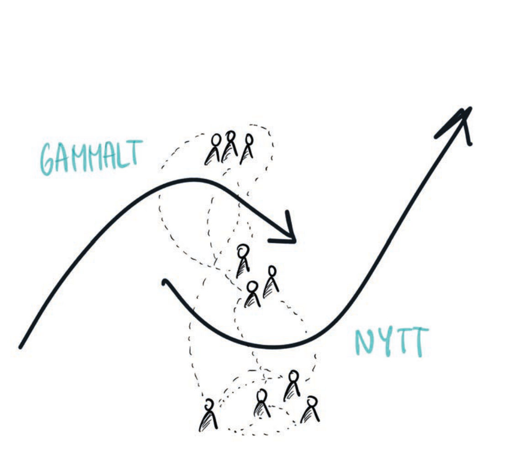